C3 Initiation à Python avec Turtle - Partie 1
Remarque
Cette initiation à Python utilise le module turtle avec le projet de la réalisation du jeu du pendu.
Une autre découverte de Python plus "classique" est disponible sous forme de notebooks et pourra être utilisée pour compléter l'approche avec turtle et le jeu du pendu.
Notebooks
- Notebook 1 :
printpour afficher dans le terminale, notion de variable. Jupyter Notebook - Notebook 2 :
inputpour demander une valeur, type des variables. Jupyter Notebook - Notebook 3 : A la découverte des instructions conditionnelles. Jupyter Notebook
- Notebook 4 : Les boucles
foretwhile. Jupyter Notebook - Notebook 5 : Les fonctions et l'instruction
return. Jupyter Notebook - Notebook 6 : A la découverte des listes (partie 1) Jupyter Notebook
- Notebook 7 : A la découverte des listes (partie 2) Jupyter Notebook
Activités
 Activité 1 : Desssiner avec le module turtle
Activité 1 : Desssiner avec le module turtle
Activité 2 : Premières fonctions
Activité 3 : Boucles
Cours
Vous pouvez télécharger une copie au format pdf du diaporama de synthèse de cours présenté en classe :
Attention
Ce diaporama ne vous donne que quelques points de repères lors de vos révisions. Il devrait être complété par la relecture attentive de vos propres notes de cours et par une révision approfondie des exercices.
QCM
1. Quelle instruction permet d'orienter une tortue crayon vers le bas ?
- a)
tortue.forward(270) - b)
tortue.left(270) - c)
tortue.right(270) - d)
tortue.setheading(270)
- a)
tortue.forward(270) - b)
tortue.left(270) - c)
tortue.right(270) - d)
tortue.setheading(270)
2. On suppose que la tortue crayon est située en (0,0) et est orientée vers le bas, quelle suite d'instructions permet de construire la figure suivante ?
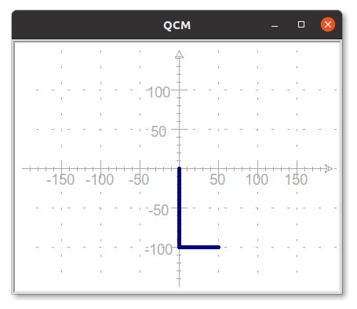
- a)
crayon.forward(100)
crayon.left(90)
crayon.forward(50) - b)
crayon.forward(100)
crayon.right(90)
crayon.forward(50) - c)
crayon.forward(100)
crayon.setheading(90)
crayon.forward(50) - d)
crayon.forward(100)
crayon.left(45)
crayon.forward(50)
- a)
crayon.forward(100)
crayon.left(90)
crayon.forward(50) - b)
crayon.forward(100)
crayon.right(90)
crayon.forward(50) - c)
crayon.forward(100)
crayon.setheading(90)
crayon.forward(50) - d)
crayon.forward(100)
crayon.left(45)
crayon.forward(50)
3. Quelles instructions permettent de positionner la tortue crayon en (-100,100), sans rien tracer à l'écran ?
- a)
crayon.penup()
crayon.set(-100,100) - b)
crayon.penup()
crayon.forward(-100,100) - c)
crayon.pendown()
crayon.goto(-100,100) - d)
crayon.penup()
crayon.goto(-100,100)
- a)
crayon.penup()
crayon.set(-100,100) - b)
crayon.penup()
crayon.forward(-100,100) - c)
crayon.pendown()
crayon.goto(-100,100) - d)
crayon.penup()
crayon.goto(-100,100)
4. En python, la définition d'une fonction commencer par le mot clé :
- a)
function - b)
def - c)
import - d)
return
- a)
function - b)
def - c)
import - d)
return
5. Quelle sera le dessin produit par l'instruction mystere(100,45) où mystere est la fonction ci-dessous :
- a) Un trait de longueur 45 d'orientation 100° et partant de l'origine
- b) Un trait de longueur 100 d'orientation 45° et partant de l'origine
- c) Deux traits de longueur 100 se croisant à l'origine à 45°
- d) Cette fonction ne produit aucun dessin !
- a)
Un trait de longueur 45 d'orientation 100° et partant de l'origine - b)
Un trait de longueur 100 d'orientation 45° et partant de l'origine - c)
Deux traits de longueur 100 se croisant à l'origine à 45° - d) Cette fonction ne produit aucun dessin !
6. Quelle instruction permet de créer une boucle qui va répéter 5 fois les instructions indentées qui suivent ?
- a)
for ma_variable in range(5) - b)
for ma_variable in range(5): - c)
for ma_variable in 5: - d)
if ma_variable in 5:
- a)
for ma_variable in range(5) - b)
for ma_variable in range(5): - c)
for ma_variable in 5: - d)
if ma_variable in 5:
7. De quand date la première version du langage Python ?
- a) 1951
- b) 1971
- c) 1991
- d) 2011
- a)
1951 - b)
1971 - c) 1991
- d)
2011
Exercices
Exercice 1 : Quelques dessins avec turtle
Ecrire un programme Python permettant de dessiner les figures suivante :
Aide
On donne le squelette de programme suivant qui servira de point de départ :
-
La lettre H
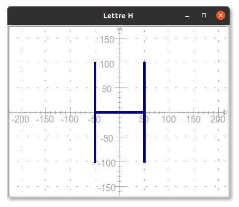
-
Une croix centrée sur l'origine
Attention
- La longueur totale d'une branche de couleur est de 200 pixels
- Les couleurs des branches sont navy et darkred
- La branche de couleur navy fait un angle de 45° avec l'horizontale
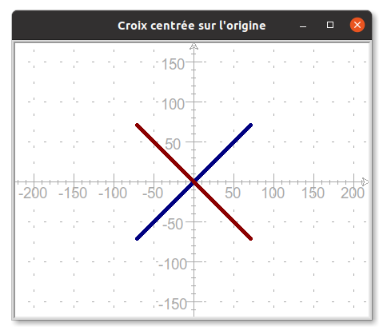
-
Des cercles
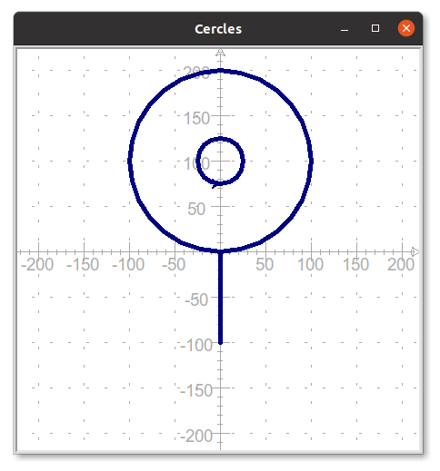
Exercice 2 : Utilisation d'une fonction
Rappel
On donne ci-dessous le code de la fonction ligne(x1,y1,x2,y2) vue dans l'activité 2, elle permet de tracer la ligne joignant les points d'extrémités (x1,y1) et (x2,y2)
- En utilisant la fonction
ligne, construire la grille de morpion suivante :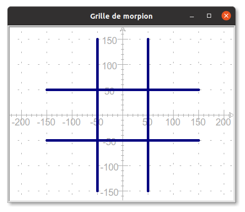
- Dessiner de nouveau la lettre H de l'exercice 1 en vous aidant de cette fonction.
- Comparer les deux programmes (avec et sans fonction), qu'en pensez-vous ?
Exercice 3 : Ecrire une fonction
Le but de l'exercice est de pouvoir dessiner une croix dans l'une quelconque des cases de la grille de morpion de l'exercice précédent. Comme par exemple dans la case supérieure droite tel qu'illustré ci-dessous.
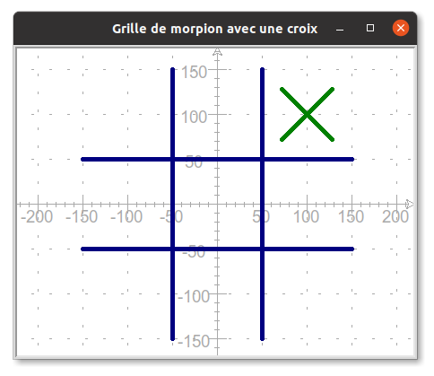
Les croix ont toujours la même couleur (green) et la même taille (des branches de longueur 40 pixels), seule la position de leur centre varie. On décide donc, d'écrire une fonctioncroix(x,y) qui trace la croix à partir du point de coordonnées (x,y)
- Recopier et compléter l'écriture de la fonction croix (pour l'instant seule la branche supérieure droite est tracée):
- Utilisation de la fonction
- Quel appel à la fonction
croixpermet de tracer la croix se situant dans la case supérieure droite ? - Quel sera le résultat de l'instruction
croix(-100,0)?
- Quel appel à la fonction
Exercice 4 : Une fonction cercle
- En vous inspirant de l'exercice 3, écrire une fonction
cercle(x,y)qui permet de tracer un cercle de rayon 35 et de couleur darkred dans l'une quelconque des cases de la grille de morpion. Comme par exemple ci-dessous dans la case inférieure droite.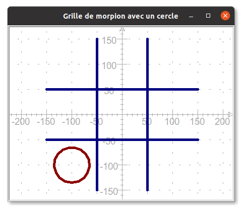
- Reproduire la grille de morpion suivante en utilisant les fonctions
croixetcercle: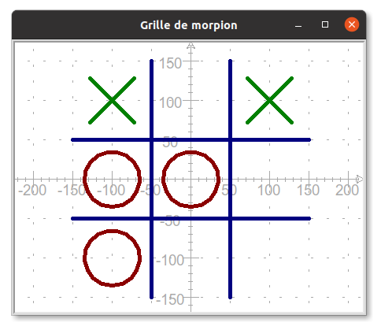
Exercice 5 : Grille
Le but de l'exercice est d'utiliser les boucles pour tracer la grille suivante :
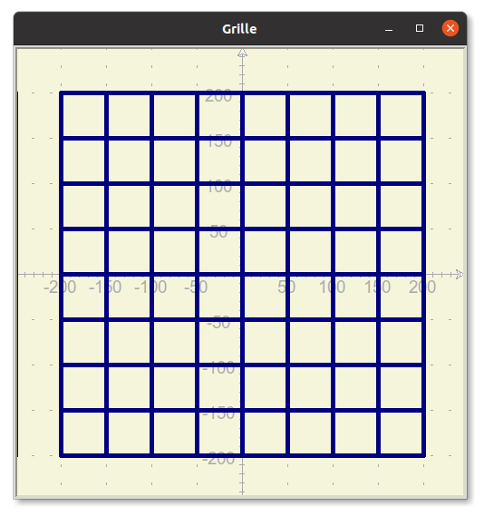
On donne le squelette de programme suivante qui fixe les paramètres du dessin et contient la fonction ligne(x1,y1,x2,y2) vue dans les notebooks d'activité permettant de tracer une ligne allant du point de coordonnées (x1,y1) au point de coordonnées (x2,y2).
import turtle
# Création du "papier" et du "crayon"
crayon = turtle.Turtle()
papier = turtle.Screen()
# Taille, dimension et couleur pour le papier et le crayon
papier.bgcolor("beige")
papier.setup(width=500,height=500)
crayon.color("navy")
crayon.pensize(5)
def ligne(x1,y1,x2,y2):
crayon.penup()
crayon.goto(x1,y1)
crayon.pendown()
crayon.goto(x2,y2)
-
Ecrire une boucle
forpermettant de tracer les lignes horizontales.Aide
En cas de difficultés, écrire le tracé normal des lignes (sans boucle). Observer vos instructions de façon à repérer les variables qui doivent être modifiées et celles qui restent fixes.
-
Ecrire une boucle
forpermettant de tracer les lignes verticales.
Exercice 6 : Quelques figures avec turtle
Construire les figures suivantes (le repère est là pour vous aider et ne doit pas être reproduit):
- L'escalier

- Cercles concentriques (les couleurs alternent entre
blueetlightblue, le crayon a une épaisseur de 10, les cercles ont pour rayon 10,20,30, ...)
Exercice 7 : Polygone régulier
-
Ecrire une fonction
triangle_equilateral(c)qui trace un triangle équilatéral de côtecà partir de la position courante de la tortue.Aide
- On rappelle que tous les angles d'un triangle équilatéral sont égaux et valent 60°.
- Les deux premières étapes de la construction sont illustrées ci-dessous.
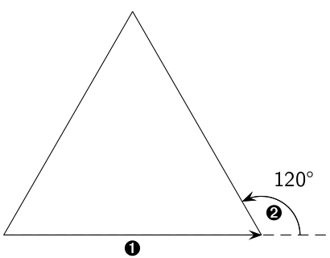
- Comme un angle plat mesure 180°, on a tourné de 120° de façon à former un angle intérieur de 180°-160° = 60°
-
Ecrire une fonction
carre(c)qui trace un carré de côtecà partir de la position courante de la tortue. -
Ecrire une fonction
polygone_regulier(n,c)qui trace un polygone régulier de côtecà partir de la position courante de la tortue.Rappel
- Un polygone régulier est un polygone dont tous les côtés sont de la même longueur et tous les angles sont égaux.
- Les angles d'un polygone régulier à \(n\) côtés mesurent \(\dfrac{360}{n}\)
Exercice 8 : Drapeau
Le module turtle permet aussi de colorier des surfaces, pour cela:
on fixe la couleur de remplissage avec crayon.fillcolor()
avant de commencer le dessin de la surface, on écrit crayon.begin_fill()
à la fin de la construction de la surface, on écrit crayon.end_fill()
Par exemple, pour dessiner un cercle rempli en rouge :
- Ecrire et tester une fonction
rectangle_rempli(x,y,largeur,longueur,couleur)qui trace un rectangle rempli avec la couleurcouleur, de dimensionslargeur x longueuret dont le coin inférieur gauche est situé au point de coordonnées(x,y) - En utilisant la fonction ci-dessus, écrire un programme Python permettant de dessiner un drapeau français de dimension
300sur200(chacun des trois rectangles formant le drapeau est de dimensions100x200) - Même question avec le drapeau de la Suède.
Exercice 9 : Panneau de signalisation
Ecrire un programme Python permettant de dessiner le panneau de signalisation de votre choix. Quelques exemples sont proposés ci-dessous.
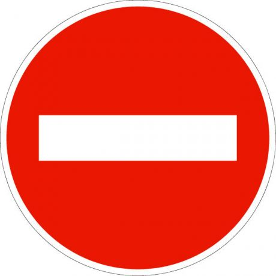

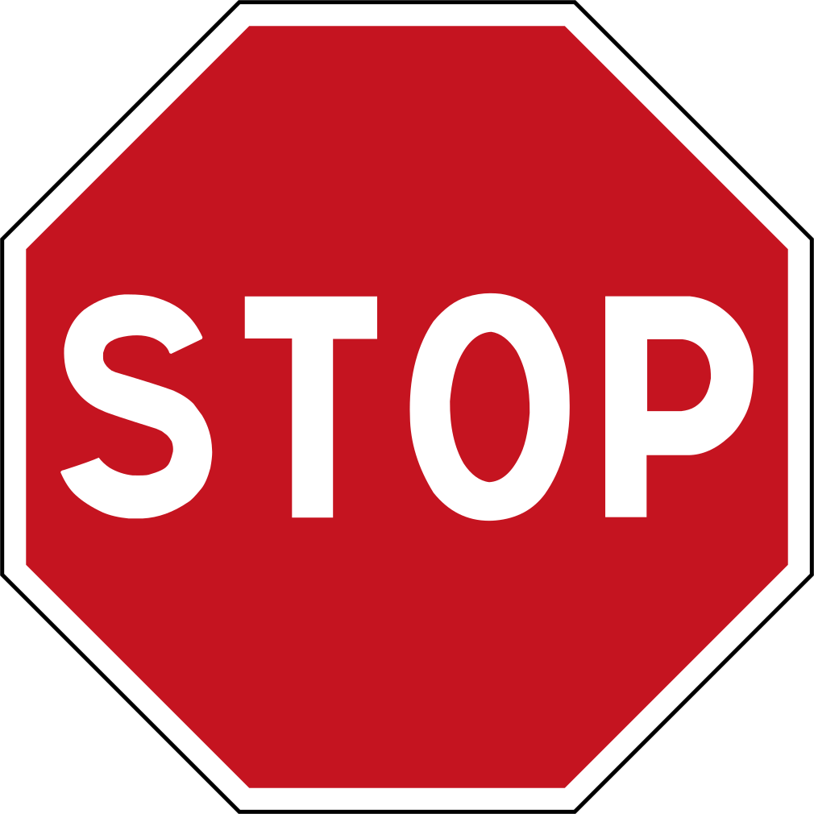

Aide
Consulter la page de documentation du module turtle et plus particulièrement celle concernant la fonction write qui permet d'écrire à l'écran